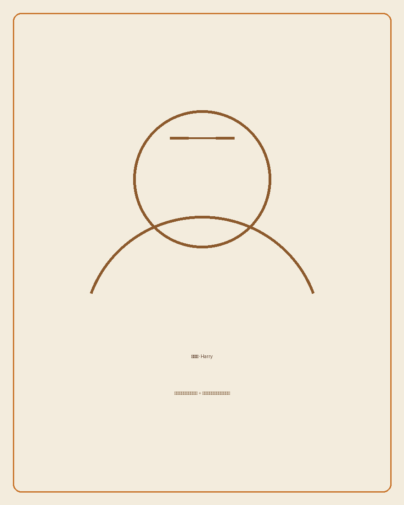

科學不是透過成績、選擇題決定你是否有資格
太多孩子在還沒真正認識科學之前，就先被一次次的考試篩選出「你不是讀科學的料」。 我不相信這件事。科學是一種看世界的方法，不是一張門檻很高的入場券。

我是謝孟翔，大家也叫我 Harry，教書十年了。
我一直相信三件事：科學不是透過成績、選擇題來決定一個人有沒有資格學習；有好奇心，世界就會進步； 如果一件事不覺得有趣，人就不會真正開始學習。
這幾年，我把這些信念放進課堂——用專題式學習（PBL）取代填鴨、鼓勵學生提問而不是背答案。 現在，我也把這份初衷，帶到教室之外：設計教師工作坊、參與課程政策規劃、思考 AI 時代下， 科學教育還可以長成什麼樣子。
這個網站，記錄我正在做的事，也是我想邀請更多老師、更多對教育有想法的人，一起參與的地方。
關於我
我教書十年了。
一開始，我單純想當一個好老師。教學生解題、帶班級、當導師——這些事我都盡量嘗試， 也慢慢磨出了一套自己相信的教學方式：專題式學習（PBL）、鼓勵學生思考，而不是給標準答案。
十年之後，我拿到了師鐸獎，也聽到很多學生說我是他們印象深刻的理化老師、物理老師—— 有創意、會突破框架、帶給他們更多視野。這些回饋我很珍惜，但也讓我開始問自己一個問題： 如果我一直當一個很會教書的老師，教到退休，那我心裡最在意的那件事——改變台灣的科學教育——會不會其實從來沒有真正發生？
這一年，我沒有站在講台上，而是進入了教育機關，參與課程規劃與教師培訓的工作。 這對我來說是一次沉澱，也讓我重新看見：改變教育這件事，可以有很多種身分、很多種入口， 不是只有「當一個好老師」或「當上校長」這兩個選項。
我現在的身分還在持續長出新的樣子——但有一件事沒有變過。
太多孩子在還沒真正認識科學之前，就先被一次次的考試篩選出「你不是讀科學的料」。 我不相信這件事。科學是一種看世界的方法，不是一張門檻很高的入場券。
每一個重要的科學發現，起點都是一個「為什麼會這樣？」的提問，而不是一份標準答案。 教育如果只教學生記住答案，等於是在磨掉他們最寶貴的能力。
這是我十年教學裡最深的體會。學生不是不會學，是還沒有找到讓他們覺得 「這件事跟我有關、很好玩」的那個切入點。找到那個切入點，是老師最重要的工作之一。
我是一個終身學習者，也是一個習慣打破既有框架的人。我不甘於只用單一身分定義自己—— 過去十年我是老師，現在我在教育機關參與課程規劃與教師培訓，未來我可能會是研究者、大學講師， 或是其他現在還說不準的身分。
但不管身分怎麼變化，我做的每一件事，都在回答同一個問題： 怎麼讓更多人（老師和學生）重新覺得，學習科學是一件有趣、值得投入的事？
這就是我在做，也會持續做下去的事。
我在做的事
這是一個不從「AI」「跨領域」這些技術標籤開始的工作坊系列。我們想先談的是： 老師為什麼開始教書、學生為什麼會覺得學習有趣——技術，只是幫助這件事發生的工具，不是門檻。
三場工作坊，難度循序漸進，老師可以只參加一場，也可以三場都來：
與我的教學啟蒙導師、一位台灣師大附中教師對話，重新找回教學初衷，並親身體驗一次好奇心驅動的學習。
邀請業界講師分享 AI 如何放大教學的可能性，老師現場設計一段可立即使用的課堂活動。
這一場要跨越的不只是學科的牆，也是「這不是我的專業，我不行」心裡那道牆。不同科目的老師與跨領域業師一起共備一段課程單元，在過程裡重新當一次學習者——也重新體會，學生為什麼會（或不會）愛上學習。
（報名與詳細時間，將於近期公布）
文章
我正在整理十年教學裡最重要的一些思考，寫成文章分享出來——關於 AI 與教學設計、 十年教學裡最重要的一件事、對台灣科學教育的觀察，還有「有趣」是怎麼被設計出來的。
聯絡
如果你是高雄、台南的老師，想參加工作坊；或你對教育科技、科學教育有想法，想聊聊； 或你只是想收到工作坊與文章的最新消息——都歡迎寫信給我。
harryhsieh@icloud.com